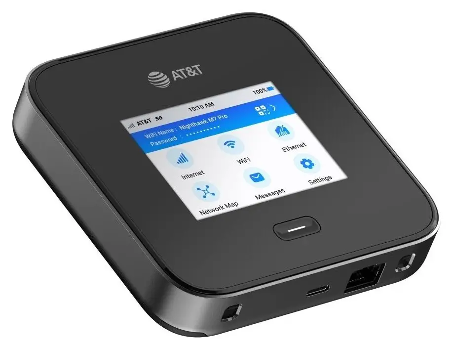

NETGEAR Nighthawk M7 Pro Mobile Hotspot mampu mencapai kecepatan 5G hingga 6 Gbps dan mendukung Wi-Fi 7 tri-band, serta dapat beroperasi secara bersamaan pada dual-band dengan kecepatan agregat hingga 5,8 Gbps. Kecepatan tinggi ini memungkinkan pengguna tetap terhubung ke internet kapan pun dan di mana pun mereka berada, baik untuk liburan maupun produktivitas.

Selain itu, kapasitas baterai Galaxy S24 FE mengalami peningkatan tipis dari 4.500mAh menjadi 4.565mAh. Meskipun lebih besar daripada model Galaxy S24 reguler yang hanya memiliki kapasitas baterai 4.000mAh, tentu saja daya tahannya masih harus diuji lebih lanjut.
Perangkat mobile hotspot ini dilengkapi layar 2,8 inci dan mendukung frekuensi 5 GHz + 6 GHz, agregasi bandwidth, 5G Sub6 (6CC) / 300MHz, NR-CA, serta jaringan 4G LTE CAT20 (5CC). Dengan baterai berkapasitas 5040mAh yang dapat dilepas, perangkat ini memiliki daya tahan hingga 10 jam penggunaan.
Nighthawk M7 Pro Mobile Hotspot saat ini tersedia di situs ATT.com dengan harga US$ 449,99. Pelanggan AT&T Enterprise Business dapat membelinya seharga US$ 349,99 dengan kontrak dua tahun atau US$ 299,99 dengan kontrak tiga tahun.